Validaciones de formularios
Este es un aspecto muy importante al implementar un formularios ya que nos permite definir que la información ingresada por los usuarios cumpla con las caracteriticas y necesidades de nuestra paguina, en otras palabras podemos defimir no solo el tipo de dato que deseamos recibir, si no que tambien el donde hacerlo y las caracteriticas obligatorias de esta información.
Las validaciones se pueden aplicar tanto en el lado del navegador (frontend) como en el lado del servidor (backend) , en el caso de HTML unicamamente se interactua con las validacines del lado del navegador, las validaciones en el navegador actuan como un primer filtro para la información ingresada en la paguina, lo cual las convierte en un recurso muy util para conseguir un mejor funcionamento en nuestra paguina.
Por lo tanto las validaciones en el navegador nos ayudan a:
Evitar el ingreso de datos erroneos
Validar que la información ingresada tenga el formato adecuado
Verificar que toda aquella información que consideremos indispensable no sea omitida
En algunos casos que la información ingresada sea real
Nota: Cabe resaltar que si bien estas validaciones son muy buena implementación no debe ser la unica medida de seguridad de la paguina, ya que por muy bien estructuradas y verificadas que esten un usuario malicioso aún puede alterar e inyectar datos en el envio de estos hacia el servidor.
Tipos de Validación
Validación integrada
-
Una de las caracteriticas más resaltadas de los elementos de formulario modernos es su capacidad para validar la mayoria de los datos sin recurrir a JavaScript, esto atravez del uso de funciones las cuales estan disponibles de forma inherente a la mayoria de los elementos.
Si los datos ingresados en el elemento cumple con todas pautas definidas para este se considera valido, en aquellos elementos definidos como validos :
El elemento es compatible con la pseudo clase de CSS: ":valid", la cual permite aplicar estilos espesificamente a todos aquellos elementos validos
Si el usuario intenta enviar los datos del formulario el navegador lo hara, siempre y cuando no exista otra limitante que lo impida
Cuando un elemento no es valido:
El elemento coincide con la pseudo clase CSS: ":invalid" la cual le permite aplicar estilos CSS a todos aquellos elementos que no sea valido
Si el usuario intenta enviar la información el navegador rechazara su acción y mostrará un mensaje de error hasta que se cumplan todos los parametros
-
La propiedad badInput de solo lectura de un objeto ValidityState indica si el usuario proporcionó información que el navegador no puede convertir
-
La propiedad patternMismatch de solo lectura de un objeto ValidityState indica si el valor de una entrada, después de haber sido editado por el usuario, no se ajusta a las restricciones establecidas por el atributo de patrón del elemento.
-
rangeOverflow o rangeUnderflow:
La propiedad rangeOverflow de solo lectura de un objeto ValidityState indica si el valor de una entrada, después de haber sido editado por el usuario, no se ajusta a las restricciones establecidas por el atributo max del elemento.
La propiedad rangeUnderflow de solo lectura de un objeto ValidityState indica si el valor de una entrada, después de haber sido editado por el usuario, no se ajusta a las restricciones establecidas por el atributo min del elemento.
-
La propiedad stepMismatch de solo lectura de un objeto ValidityState indica si el valor de una entrada, después de haber sido editado por el usuario, no se ajusta a las restricciones establecidas por el atributo de paso del elemento.
-
La propiedad tooLong de solo lectura de un objeto ValidityState indica si el valor de una entrada o un área de texto, después de haber sido editado por el usuario, excede la longitud máxima de la unidad de código establecida por el atributo maxlength del elemento.
La propiedad tooShort de solo lectura de un objeto ValidityState indica si el valor de un input , button , select , output , fieldset o textarea , después de haber sido editado por el usuario, es menor que la longitud mínima de la unidad de código establecida por la longitud mínima del elemento atributo.
-
La propiedad typeMismatch de solo lectura de un objeto ValidityState indica si el valor de una entrada, después de haber sido editado por el usuario, no se ajusta a las restricciones establecidas por el atributo de tipo del elemento.
-
La propiedad valueMissing de solo lectura de un objeto ValidityState indica si un control requerido, como input , select o textarea , tiene un valor vacío.
Nota: A continuación se nombran los terminos utlizados para los casos de error que pudiesen cometer los usuarios incumpliendo las pautas del formulario resultando en elementos interpretados como invalidos:
Ejemplo de la implementación de los estilos CSS segun el status del elementos:
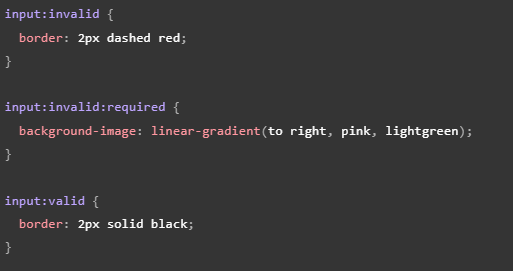Este codigo retorna un cuadro de texto al que se le hacignan estilos en base a su estatus, es decir al usar el atributo "required" la entrada será conpatible con las pseudo-clases ":required", ":invalid" y ":valid", por otro lado el elemento será considerado invalido en aquellos casos en los que se este por enviar el elemento bacio, por lo cual se mostrara un mensaje de elerta notificando de la falta.
Nota: El indicar cuando un el campo de un formulario es obligatoria no solo es una buena practica si no que es un requisito de las normas de accesibilidad de la WCAG.
Nota: Tambien es una buena practica el preguntar solo lo necesario a los usuarios, los formularios excesibamente largos así como la información inrelebante pueden ser contra producentes.
Los atributos de validación son:
Required:
-
Define el si alguno de los campos es de caracter obligatorio para poder realizar el envio de los datos del formulario, por lo tanto mostrara un mensaje de error mientras que esta entrada se encuentre bacia, la cual tambien sera tomada como invalida.
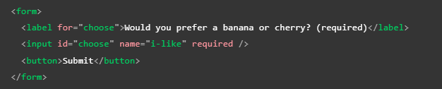 Minlength y Maxlength:
-
Definen la longitud maxima y minima de los datos textuales, por lo que el elemento sera considerado invalido si el texto en este es inferior al minimo o superior al maximo definidos con estos atributos.
Nota: los navegadores normalmente no permiten escribir un valor más largo de lo esperado.
Nota: Un buena herramienta para la experienci del usuario es utilizar el atributo Maxlength junto con JavaScript para mostrar un contador de caracteres al usuario (por ejmemplo como lo hace twitter al twittear).
Min y Max:
-
Espesifica los valores minimo y maximo de los elementos de entrada numericos, en otras palabras definen el rango en el que se debe encontrar el n{umero para ser aceptado, si el número no se encuentra dentro de estre el elemento se considerará invalido.
Ejemplo:
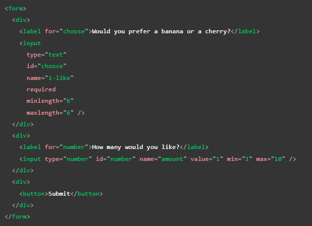Este codigo define la cantidad de caracteres que pueden ser añadididos en un cuadro de texto así como el rango númerico que será aceptado en el elemento number, por lo tanto en el elemento texto si no cumple con el rango de caracteres requerido el elemento es tratado como invaldo, del mismo modo si el numero ingresado en el number no se encuentra en tre 1 y 10 sera considerado invalido, a continuación se muestra el resultado funcional de este codigo:
Nota: elementos tipo "number" "range" y "date" tambien pueden adoptar el atributo "step" el cual define en que cantidad incrementara o se reducira el valor cundo se usen controles de entrada (flechas arriba y abajo).
Type:
-
Espesifica el tipo de dato que sera manejado por el elemento, como por ejemplo correo o número etc.
patter:
-
Este atributo define una expresión regular que sera aceptada en el elemento, una expresión regular es una cadena de caracteres la cual al ser definida esta es identificada y diferencuada de cualquier otra por el navegador, por lo cual el atributo "patter" permite definir que unicamamete sean aceptadas ciertas cadenas de caracteres (numeros o palabras) que hallamos definido con anterioridad, por ejemplo:
Ejemplo funcional:
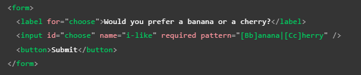El resultado de ese codigo es el siguiete:
Las expresiones regulares diferencian entre mayusculas y minusculas por lo que se a definido la compatibilidad de los caracteres en el atributo "patter", por lo tato el input acepta cuatro expresiones regulares las cuales son: Banana, banana, Cherry y cherry, en este tipo de casos mientras la cadena de caracteres que el usuario ingrese sea diferente a la definida en "patter" este elemento sera reconosido como invalido.
Nota: para los stilos CSS de este ejemplo se utilizaron los basados en el status del elemento, los cuales ya fueron mostrados con anterioridad.
Nota: Notodos los elementos input necesitan aplicar el atributo "patter" para definir expresiones regulares, por ejmplo el elemento "email", el cual define que el texto ingresado en este concuerde con el formato de un correo electronico
Nota: El elemento "textarea" no es compatible con el atributo "patter"
Validación en base a JavaScript
Se trata de todo aquel friendworks o codigo propio JavaScript utilizados para validar un formulario, Este tipo de validaciones tiene la vetaja de ser de caracter completammente persobalizable para el formulario, por lo que puede cubrir cualquier tipo de necesidad de información, e incluso si el codigo se encuentra lo bastante bien estructurado estas validaciones tambien pueden brindar un mayor nivel de seguridad a la paguina.
Sin embargo tambien cuenta con la desventaja de que el inplementar estas validaciones puede ser bastante más complejo que hacerlo con las validaciones integradas HTML ya que es necesario formular un codigo propio o incluir una biblioteca o friendwork.
Debido a que estas validaciones inbolucran un lenguaje de programamción externo como lo es JavaScript es necesario tener presentes ciertas cualidades de este, como lo son el ROM y las API, esto debido a que estas funcionalidades y caracteriticas JavaScript tiene la capacidad de percutir en los elementos HTML.
Existen dos tipos de validaciones JavaScript, las que se basan en la API de validación de resitriciones y aquellas validaciones sin ninguna API integrada.
API de Validación de restricciones
-
Este caso consta de un conjunto de metodos y porpiedades disponibles en las siguietes interfaces DOM de los elemetos de formularios.
"HTMLButtonElement" (representa un "button")
"HTMLFieldSetElement" (representa un "fieldset")
"HTMLInputElement" (representa un "input")
"HTMLOutputElement" (representa nn "output")
"HTMLSelectElement" (representa un "select")
"HTMLTextAreaElement" (representa un "textarea")
La API de validación de restricciones hace que las siguientes propiedades estén disponibles en los elementos anteriores.
ValidationMessage:
-
Este atributo debuelve un mensage de error descriptvo de las condiciones de validación que el elemento no cumple, segun cual sea el caso este atributo puede tener tres retornos posibles:
En caso de que el elemento HTML tal como se a mencionado incumpla alguna pauta de validación (elemento invalido) el retorno del atributo será un mensaje de error previamente definido atravez de JavaScript
En el caso de que el elemento HTML no sea un candidato viable para la empleación de este atributo (willValidate: false) este retornara un valor "false"
Por ultimo caso si el elemento cumple con todas las condiciones de validación (elemento valido) este atributo retornara una cadena vacia
Validity:
-
Retorna un elemento "validityState" el cual puede contener una de varias propiedades las cuales describen el estado de valides del elemento HTML, entre los cuales algunos de los más comunes son:
patternMismatch:
-
Se acciona en el caso de que el valor ingresado no coincida con el patron definido, por lo anto en este caso retorna un "true", en cuyo caso el elemento coincidira con la pseudo-clase CSS :invalid, por otro lado en caso de que el valor si cumpla con el patron definido unicamente retorna un "false"
tooLong:
-
En caso de que la lungitud del valor ingresado sea inferior o igual a la longitud maxima definida el atributo "maxlength" retornará un valor "false", sin embargo en caso de que la longitud del valor supere esta pauta entonces en su lugar retornara una valor "true", en cuyo caso el elemento HTML coincidira con la pseudo-clase CSS ":invalid"
tooShort:
-
En el caso de que la longitud del valor ingreado sea superior o igual a la longitud minima definida en el atributo "minlength" el retorno de este elemento será un "false", sin embargo si se inclumple esta pauta y el valor ingresado posee una longitud inferior a la minima entonces el retorno del elementos será un "true", en dicho caso el elemento HTML coincidira con la pseudo-clase CSS ":invalid"
rangeOverflow:
-
Este elemento mide el si el valor de un elemento "number" se encuetra por debajo del valor maximo definido en el atributo "max", si esta condición se cumple el retorno del elemeto será un valor "false", por otro lado si esta condición se incumple entonces el elemento retornara un valor "true", por lo tanto el elemento HTML coincidira con las pseudo-clases CSS ":invalid" y "out-of-range"
rangeUnderflow:
-
Comprueba el si el valor númerico de un elemento "number" se encuentra por encima del valor minimo establecido en el atributo "min", en caso de que esta condición sea cumplida el retorno del alemento será "false", por otro lado si esta pauta no es cumplida y el valor ingresado se encuentra por debajo del minimo el retorno será un valor "true", en cuyo caso el elemto HTML coincidira con las pseudo-clases ":invalid" y "out-of-range"
typeMismatch:
-
Este elemento comprueba si el valor introducido posee la sintaxis requerida, de cumplirse esta pauta el retorno será una valor "false", de otra manera si esta pauta es incumplida el retorno de esta será un valor "true" en cuyo caso el elemento HTML coincidira con la pseudo-clase CSS ":invalid"
valid:
-
Comprueba el si el elemento HTML cumple con todas las restricuines de validación, en el caso de que así sea el elemto retorna un valro "true" y coincidirá con la pseudo-clase CSS ":valid", en el caso contrario de que el elemento incumpla alguna de las restriciones entoces el retorno será "false" y de este modo el elemeto HTML coincidira con la pseudo-clase CSS :invalid
valueMissing:
-
Retorna "true" en el caso de que el elemento HTML requiera un valor de forma ibligatoria, sin embargo este se encuentre vacio de este modo el elemeto HTML coincidira con la pseudo-clase :invalid, si se da el caso contrario entoces el retorno será un valor "false"
willValidate:
-
Retorna "true" siempre que el elemento HTML sea validado antes de enviarlo, si se da el caso contraio el retorno será "false", este atributo no hara que el elemeto HTML coincida con alguna pseudo-clase CSS
La API de validación de restricciones también pone a disposición los siguientes métodos en los elementos anteriores y el elemento de formulario.
checkValidity():
-
ESta función retorna "true" en caso de que el elemento no tenga problemas de validación, en caso de que se de el caso contrario el retorno de la funciñon sera "false", a la vez que iniciara un "evento de elemento invalido"
reportValidity():
-
Esta función reporta cambios invalidos usando eventos, este metodo es util en conjunto de "preventDefault()"" en un controlador de eventos "onSubmit"
setCustomValidity(mensaje):
-
Establece un mensaje de error personalizado, el cual se mostrará en el caso de que el elemento no cumpla las restricions de validación definidas, esto permite utilizar codigo JavaScript para personalizar dicho mensaje diferenciando de los mesajes de error asignados por defecto por el navegador
Inplementar un mensaje de Error personalizado
-
Como se acaba de mensionar es posible utilizar JavaScript para configurar un mesaje de erro personalizado, el cual se mostrara a los usuarios en aquellos casos en los que se incumplan las pautas de validación inpuestas en el formulario.
Sin embargo el recurrir a este tipo de metodos de validación conlleva cietras desventajas como lo son :
No existe una forma establecida de modifivar su aspecto mediante CSS
Depende en gran medida de la configuración regional del navegador, por lo que se pudiese dar el caso de que el mensaje de error se muestre en un lenguaje diferente al de la paguina web
Aún así el personificar estos mensajes personalizados es uno de los casos de uso más comunes de la API de validación de restricciones.
Ejemplo de uso:
-
HTML
- 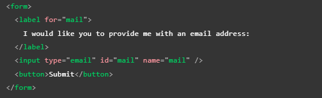
JavaScript
-
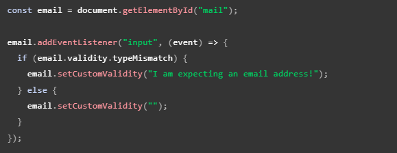
Aquí almacenamos una referencia a la entrada de correo electrónico, luego le agregamos un detector de eventos que ejecuta el código contenido cada vez que se cambia el valor dentro de la entrada.
Dentro del código contenido, verificamos si la propiedad valid.typeMismatch de la entrada de correo electrónico devuelve verdadero, lo que significa que el valor contenido no coincide con el patrón de una dirección de correo electrónico bien formada. Si es así, llamamos al método setCustomValidity() con un mensaje personalizado. Esto hace que la entrada no sea válida, de modo que cuando intenta enviar el formulario, el envío falla y se muestra el mensaje de error personalizado.
Si la propiedad validad.typeMismatch devuelve falso, llamamos al método setCustomValidity() con una cadena vacía. Esto hace que la entrada sea válida, por lo que se enviará el formulario.
Resultado del codigo de ejemplo:
Validación de formlarios sin una API integrada
-
Para estructurar la validaciones de esta forma es necesario tener en cuanta ciertas deferencias que repercuten en el codigo:
-
La primera diferensiación consiste en que la pseudo-clase ":invalid" es necesario definirla como una clase más, ya que al no trabajar con la API es necesario realizar la vinculación xon esta de forma manual
-
La seguna consiste en estructurar el codigo JavaScript desde cero, teniendo en cuenta todos los aspectos intrisecos del codigo, desde el en que ocaciones no se va a enviar la información, que mensaje se mostrara, de que forma se realizara la validación etc
A continuación se muestra un ejemplo algo más completo de una validación JavaScript sin el uso de la API:
HTML
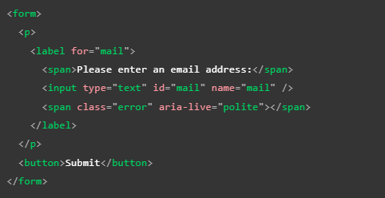CSS
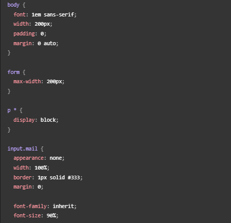 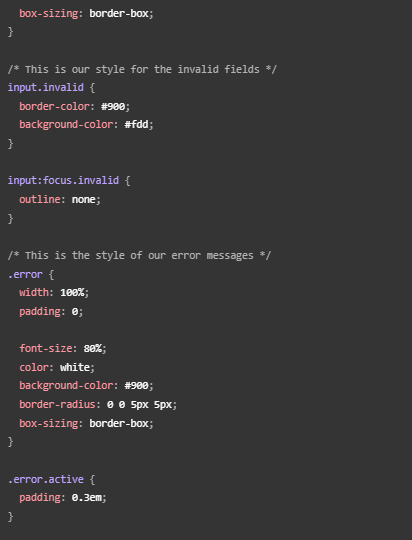JavaScript
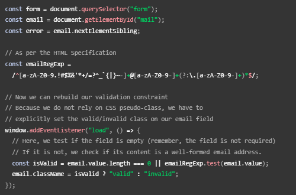 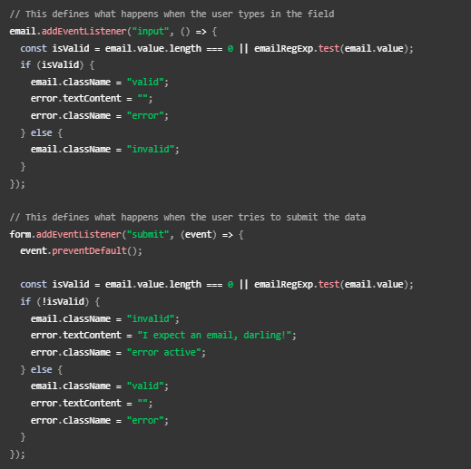Tal como se puede apreciar realizar una validación ropia utilzando JavaScript no es especialemnte dificil siempre y cuando el codigo allá sido correctamente planteado, a su vez es una buena pactica que al crear codigo JavaScript u otro lenguaje procurar que el codigo sea de caracter reutilizable, ya sea para otros elementos, formularios e incluso otras paguinas, de esa forma se puede simplificar y agilzar el desarrollo de la paguina.
-
Un buen complemento para las validaciones basadas en JavaScript es el atributo "novalidate" el cuel indica el navegador que no debe de realizar la validación integrada por defecto, de ese modo no se mostraran los mensajes de error automaticos, por su parte este atributo no deshabilita el soporte para la API de validación de restriciones ni la compativilidad con las pseudo-clases CSS, por lo tanto podremos mostrar sin incombeneinte nuestros mensajes de error personalizados.